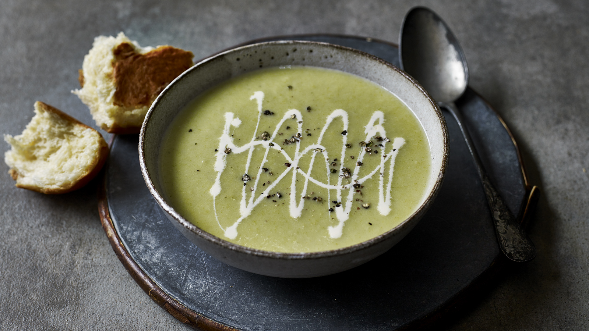

Super simple, and super satisfying. This leek and potato soup is a classic for me. Finished with a savoury granola, it doesn't get tastier than this.
Ingredients required
- 5 Leeks
- 3 Potatoes
- 100g Butter
- 4 sprigs of Thyme
- 2 Garlic Cloves
- 1.2L Vegetable Stock
- 80g Oats
- 40g Mixed Seeds
- 1 Tsp Ground Mixed Spice
- 3 Tbsp Honey
- 1 Tsp Chilli Flakes
- 3 Preserved Lemons
- 2 Tbsp Creme Fraiche
- Salt
- Olive Oil
Steps
- Preheat the oven to 180°C.
- Halve and wash your leeks. Roughly chop ¾ of them.
- Put the rest of your halved leeks in a tray with a pinch of salt and a drizzle of oil. Toss to coat, then roast in the oven for 20 mins.
- Peel your potatoes, then chop them into large chunks. Peel and crush your garlic.
- Add your potatoes to a large bowl filled with cold water.
- Heat 80g of butter in a large saucepan. Add the leeks, along with half of your thyme leaves, garlic and a pinch of salt. Sweat them down for 5-10 mins.
- Add in the potatoes, cover with stock and bring the mixture to a simmer. Simmer for 15 mins.
- In a frying pan, add your honey with thyme, ground mixed spice, chilli flakes and a pinch of salt. Once melted, add in the oats and mixed seeds, then stir to combine.
- Line a baking tray with baking paper, then pour your oat mixture onto the tray. Put the tray in the oven, and cook for 10 mins until the mixture is golden.
- Once the leeks are roasted, remove them from the oven and finely chop them. Get these in a bowl.
- Remove the seeds from the preserved lemons and roughly chop them. Add these into the bowl of leeks with a drizzle of olive oil, then season to taste with salt.
- When the potatoes are tender, blend until smooth. Add a tablespoon of crème fraîche, and adjust the seasoning to taste.
- Pour the soup into a bowl and top with the leek and lemon mix, clusters of the granola, a drizzle of oil and a little more crème fraîche. Serve and enjoy!